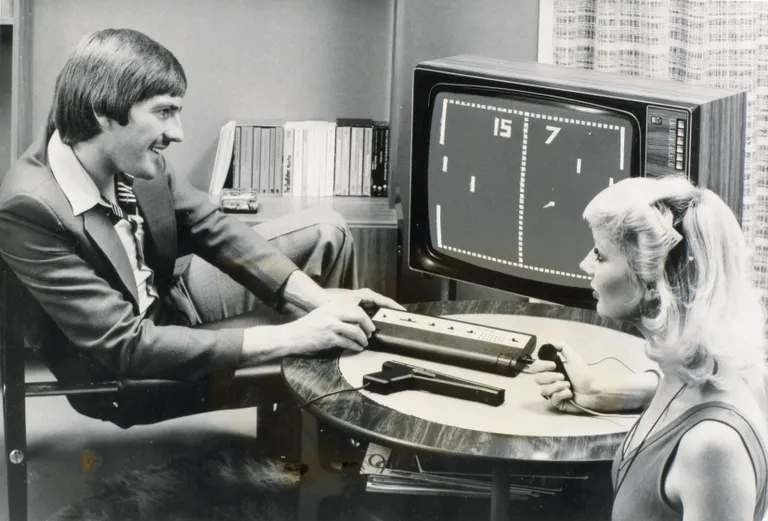
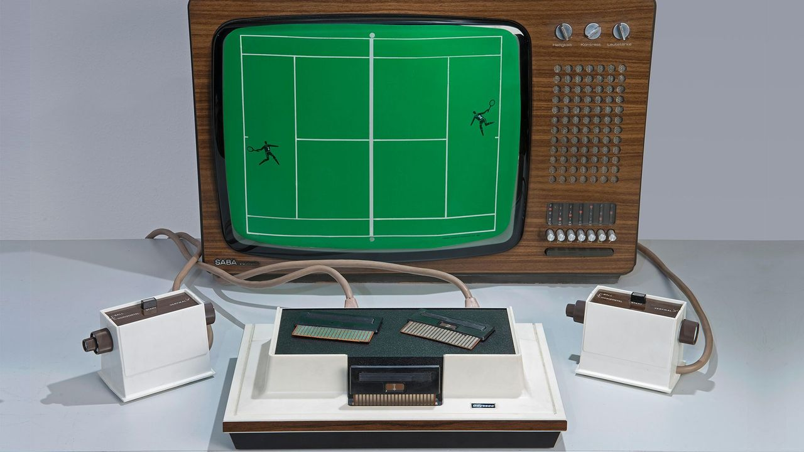
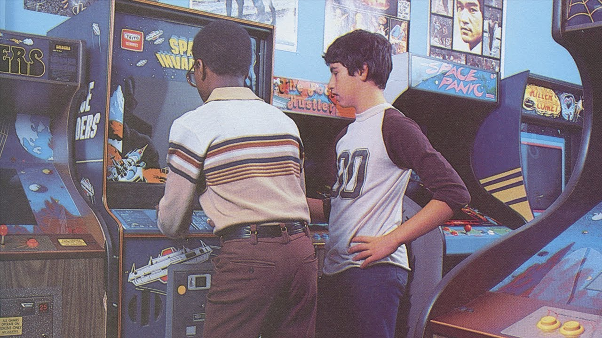
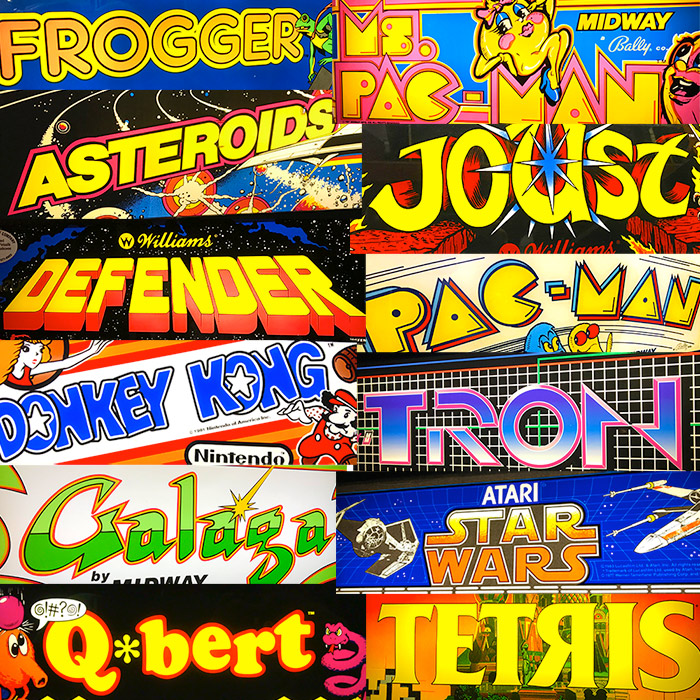

From simple beginnings to global industry, explore video games impact on modern media
First interactive game with an electronic display created, sparking new ideas through the use of digital media
Cathode Ray TubeFirst video games created, setting a stage for a new and unique form of entertainment
Tennis for TwoEarly arcade video games like Pong are released, marking the beginnings of public interest in video games
Pong Magnavox Odyssey, the first home gaming console, launches, making video games accessible to homes all over
Magnavox Odyssey In the US, video games surge in popularity and were consuming 11.2 billion quarters annually, $2.8 billion in revenue
US Video Game Industry The estimated revenue was $5 billion, exceeding the income of the entire US film industry for the first time
The Golden Age The popularity of video games exploded due to the many technological advances of the time. Advancments in areas such as microprocessors and graphics made gaming more accessible and visually interesting.
Unlike TV or movies, games let players influence outcomes, creating a highly engaging and personalized experience that other media forms cannot easily recreate.
Gaming spread into homes and arcades, becoming a key part of pop culture and social interaction and cultural phenomenon with mainstream appeal.
Media convergence is the merging and blending of multiple different media forms into one, creating new types of experiences.
Video games are now integral to modern culture, influencing industries, shaping stories, and uniting players across the globe. The journey from a niche hobby to a mainstream media form illustrates their transformative power and continuing impact.
Video games have grown exponentially from their conception creating a very influential section of modern media. Who knows how they will evolve going forward and what other forms of media will converge to create new and unique experiences
"Yet across the gulf of space, minds that are to our minds as ours are to those of the beasts that perish, intellects vast and cool and unsympathetic, regarded this earth with envious eyes, and slowly and surely drew their plans against us." — H. G. Wells (1898), The War of the Worlds